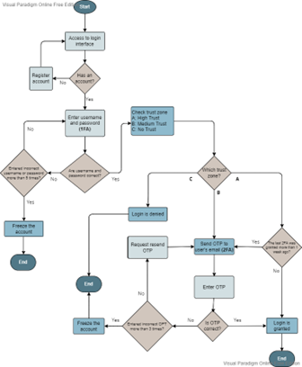
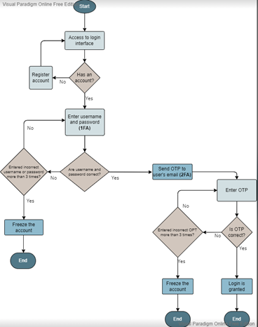
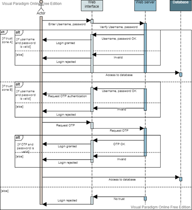
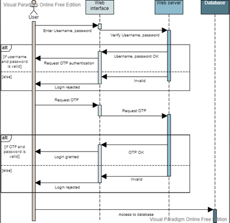

As the development of our final Coding assignment of this module progressed, our design document (submitted in Unit 6) acted as a solid blueprint on which our design was built as we received good feedback and marks on it. Even though the ideal was to build the application exactly as set-out in this document – some items were changed and adapted as issues arose with the building the actual application (as happens often in real-world applications). This did not necessarily take away from the functionality of the final output, but rather a re-thinking of implementation of some of the listed deliverables. Listed below is the evaluation and reasons for changes being made:
Scope of design (2.1)
The idea was to build most of the application on Amazon Web Services. Due to the cost of using all the services we wanted to use, we opted to rather use AWS for their MySQL storage (RDS), and add our API code to Google Cloud Platform instead do to GCP offering a free solution for cloud-hosted APIs.
Security Vulnerabilities (2.2.1)
Broken Access Control – Instead of logging all access failures, we only logged users blocked as we felt it unnecessary to list ALL failed access attempts.
Identification and Authentication Failures – No weak password checks were implemented as we felt this to be an overkill as our multi-factor authentication was a strong authentication solution.
Buffer Overflow – No extra measures were put in place as input validation was in-place.
Trust-based authorization (2.3.2)
Our initial Trust-zone model was not implemented due to time-constraints on building the application to check for IP addresses of logins. We also argued that as this application was to be built with a CL interface, it will only be installed on certain machines in the CERN laboratory, and not be publicly available on remote machines.
Our Trust model diagram thus changed from this:
To this:
Implementation (2.5)
As we improved out authentication and authorization model, the implementation and process for authenticating a user was slightly adjusted, represented in the below change made in our sequence diagram. Initial:
Adjusted:
Methodology for testing (3.1)
To improve our coverage of testing, we divided our code testing into a further 3 categories:
Unit testing, System integration testing and End-to-end testing. Methods and tools to test were kept as planned in the design document.